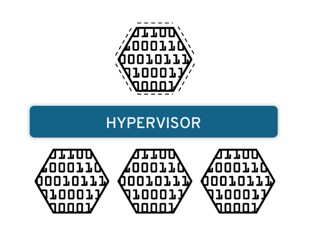
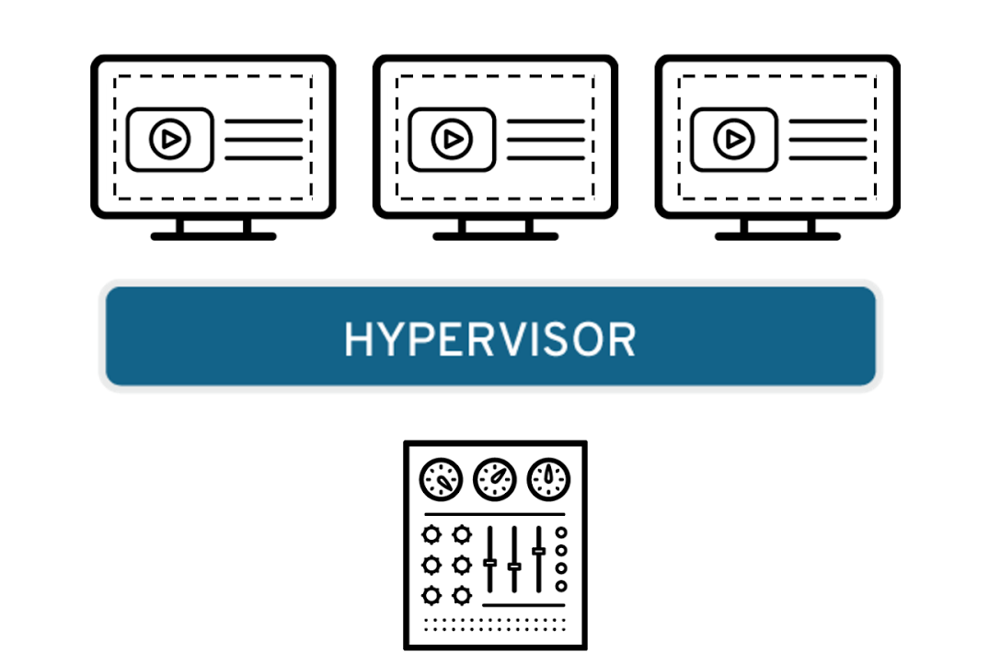
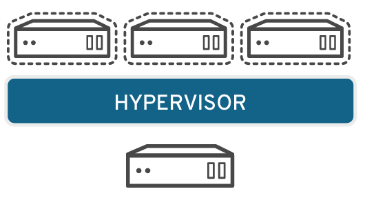
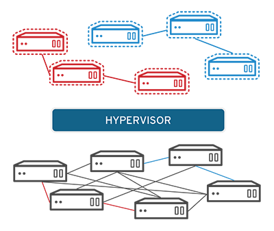

¿QUÉ ES LA VIRTUALIZACIÓN?
La virtualización es una tecnología que permite crear servicios de TI útiles, con recursos que están tradicionalmente limitados al hardware. Gracias a que distribuye las funciones de una máquina física entre varios usuarios o entornos, posibilita el uso de toda la capacidad de la máquina.
En términos prácticos, imagínese que tiene tres servidores físicos, cada uno con propósitos específicos. Uno es un servidor de correo, otro es un servidor web y el tercero ejecuta aplicaciones heredadas internas. Se utiliza alrededor del 30 % de la capacidad de cada servidor, es decir, solo una parte de su potencial.
Normalmente, la respuesta sería que sí. Por lo general, era más fácil y confiable ejecutar tareas individuales en cada servidor (es decir, un servidor, un sistema operativo y una tarea), ya que no era sencillo asignarle varias. Sin embargo, la virtualización permite dividir el servidor de correo en otros dos únicos que pueden ocuparse de tareas independientes, para poder trasladar las aplicaciones heredadas. Se utiliza el mismo hardware, pero de manera más eficiente.
Si pensamos en la seguridad, es posible volver a dividir el primer servidor para que gestione otra tarea y aumentar su uso de un 30 % a un 60 %, y luego a un 90 %. Una vez que lo logra, los servidores que quedan vacíos se pueden reutilizar para otras tareas o retirarse todos juntos para reducir los costos de refrigeración y mantenimiento.
TIPOS DE VIRTUALIZACIÓN
Virtualización de los datos:

Los datos que se encuentran distribuidos en varias ubicaciones pueden consolidarse en una sola fuente. La virtualización de los datos posibilita que las empresas los traten como si fueran un suministro dinámico, ya que proporciona funciones de procesamiento que permiten reunir datos de varias fuentes, incorporar fuentes nuevas fácilmente y transformar los datos según las necesidades de los usuarios. Las herramientas que forman parte de este proceso interactúan con varias fuentes de datos y permiten tratarlas como si fueran solo una. Gracias a ello, cualquier aplicación o usuario puede obtener los datos que necesita, de la manera que los requiere en el momento justo.
Virtualización de escritorios

Los servidores son computadoras diseñadas para procesar un gran volumen de tareas específicas de forma muy efectiva para que otras computadoras (portátiles o de escritorio) puedan ejecutar otros procesos. La virtualización de un servidor, que implica dividirlo para que sus elementos puedan utilizarse para realizar varias tareas, permite ejecutar más funciones específicas.
Virtualización de los sistemas operativos

Los sistemas operativos se virtualizan en el kernel, es decir, en sus administradores centrales de tareas. Es una forma útil de ejecutar los entornos de Linux y Windows de manera paralela. Las empresas también pueden insertar sistemas operativos virtuales en las computadoras, lo cual:
- Reduce los grandes gastos en sistemas de hardware, ya que las computadoras no requieren funciones tan inmediatas.
- Aumenta la seguridad porque todas las instancias virtuales se pueden supervisar y aislar.
- Limita el tiempo que se destina a los servicios de TI, como las actualizaciones de software.
Virtualización de las funciones de red

La virtualización de las funciones de red (NFV) separa las funciones clave de una red (como los servicios de directorio, el uso compartido de archivos y la configuración de IP) para distribuirlas entre los entornos. Cuando las funciones del software se independizan de las máquinas físicas donde se alojaban, las funciones específicas pueden empaquetarse en una nueva red y asignarse a un entorno. La virtualización de redes, que se utiliza con frecuencia en el sector de las telecomunicaciones, reduce la cantidad de elementos físicos (como conmutadores, enrutadores, servidores, cables y centrales) que se necesitan para crear varias redes independientes.